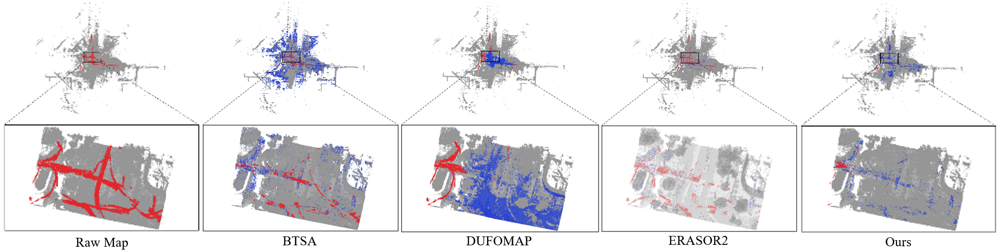
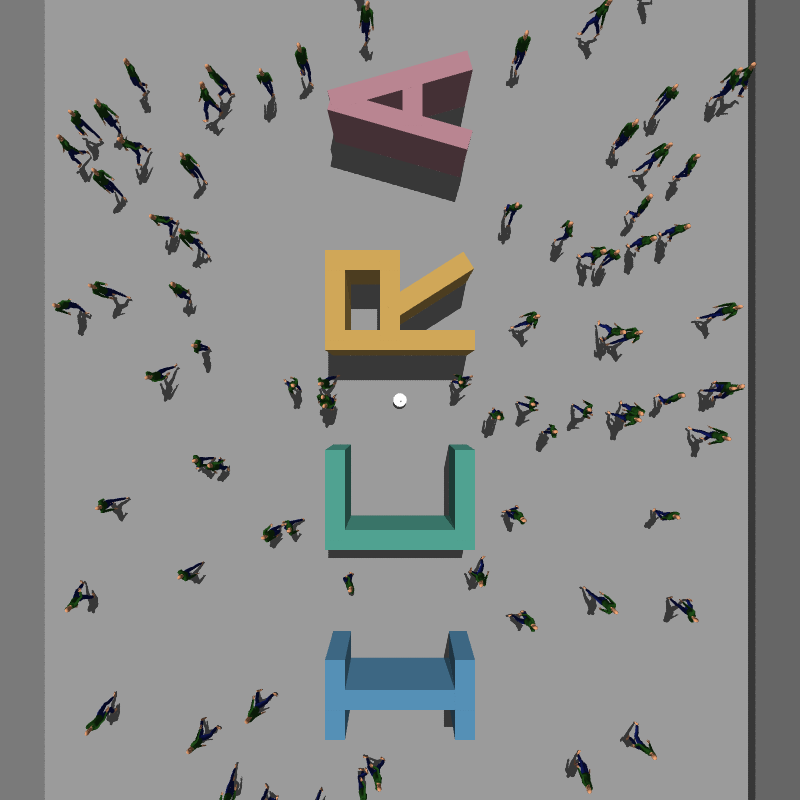
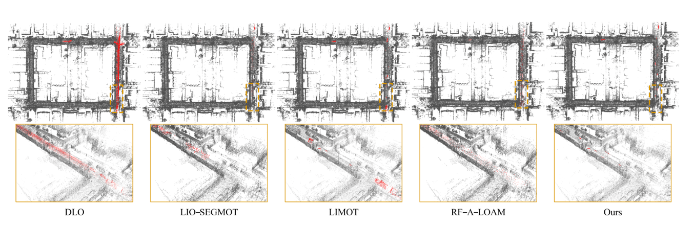

CORE CONTRIBUTION
Iteratively coupled dynamic removal
Each IESKF iteration refreshes visibility, static-point selection and geometric correspondences.
A Robust and Tightly-Coupled LiDAR-Inertial Odometry
with Online Dynamic Object Removal
Dynamic removal and state estimation, in one iterative pipeline.
Each IESKF iteration refreshes visibility, static-point selection and geometric correspondences.
One hierarchical map supports nearest-neighbor search and conservative ray casting.
Keep the map read-only during estimation, then clear contradicted points and integrate static structure.
Follow the local point cloud, camera view and global map through the complete Mall03 recording. Select a keyframe to explore a moment in the journey.
Autoplays silently when in view.
5× playback · Cropped from the complete Mall03 recording. Camera alignment is approximate; the short first/last camera holds are retained. The 2-second terminal hold is omitted.
Sensor timestamp —
Compare DOR-LIO with FAST-LIO2, BTSA, and FAST-LIO2 + DUFOMap. Drag the divider to compare maps, drag elsewhere to orbit, and scroll to zoom.
Mall 01 / floor1 · Loading comparison…
Travel along a shared timestamped trajectory. Drag the divider independently to compare BTSA and DOR-LIO.
Final maps, sampled for browser display; time changes the viewing position, not map accumulation. Both sides share one smoothed camera path. BTSA is rigidly aligned for display. Red points are DOR-derived labels on BTSA, not BTSA detections or ground truth.
Localization on nine public sequences and voxel-wise static-map evaluation on four HeLiMOS sensors.
Autoplays silently when in view.
Dynamic01 · 2× playback. Left: native static-map snapshots (0.01 m). Right: FAST-LIO2 scan accumulation with DOR labels from the separate 0.05 m run. Red is a DOR label overlay, not baseline detection or ground truth.
BTSA / DOR-LIO · MTP01 at 2×; UrbanNav at approximately 3.36×. Cumulative display history retains cleared points; it is not the native final static map. Red points are DOR label overlays.
BestSecond-bestDOR-LIO highlighted
| Sequence | A-LOAM | FAST-LIO2 | LIO-SAM | VoxelMap | Dynamic-LIO | BTSA | TRLO | LIMOT | DOR-LIO |
|---|---|---|---|---|---|---|---|---|---|
| M1 | 0.171 | 0.143 | 0.140 | 0.625 | 0.140 | 0.142 | 0.981 | 0.142 | 0.138 |
| M2 | 0.147 | 0.138 | 0.136 | 0.127 | 0.149 | 0.138 | 0.648 | 0.139 | 0.136 |
| M3 | × | 0.63 | 0.63 | × | – | 0.79 | 0.80 | × | 0.60 |
| M4 | 16.38 | 1.93 | 1.78 | × | – | 1.83 | 1.91 | × | 1.78 |
| P1 | 26.32 | 2.15 | 2.06 | 1.51 | – | 3.65 | 3.37 | 7.42 | 2.06 |
| P2 | 7.13 | × | 0.47 | × | – | 0.64 | 0.54 | 2.23 | 0.37 |
| U1 | 5.57 | 4.11 | 6.95 | 5.58 | 4.18 | 3.43 | 11.96 | 14.57 | 3.80 |
| U2 | 1.83 | 0.90 | 1.43 | 1.10 | 1.96 | 0.97 | 1.57 | 1.65 | 1.11 |
| U3 | 15.19 | 0.60 | 0.99 | 0.62 | 2.61 | 0.85 | 1.23 | 1.34 | 0.56 |
Lower is better. – = incompatible with the method; × = trajectory divergence. Rankings include ties. Sequence names follow Table II below.

BestSecond-bestDOR-LIO highlighted
| Sensor | Metric | BeautyMap | DUFOMap | ERASOR2 | BTSA | DOR-LIO |
|---|---|---|---|---|---|---|
| Aeva | PR ↑ | 88.84 | 91.33 | 98.26 | 83.76 | 95.39 |
| RR ↑ | 76.15 | 72.57 | 50.03 | 76.36 | 88.71 | |
| F1 ↑ | 80.52 | 80.59 | 64.40 | 79.76 | 91.81 | |
| Avia | PR ↑ | 83.97 | 95.14 | 98.01 | 86.68 | 97.66 |
| RR ↑ | 73.57 | 58.74 | 47.57 | 78.47 | 90.61 | |
| F1 ↑ | 76.98 | 71.61 | 62.20 | 82.01 | 93.94 | |
| Ouster | PR ↑ | 94.85 | 91.17 | 97.86 | 86.40 | 95.62 |
| RR ↑ | 74.80 | 78.79 | 70.16 | 82.33 | 96.78 | |
| F1 ↑ | 83.12 | 84.16 | 81.06 | 84.24 | 96.18 | |
| Velodyne | PR ↑ | 91.81 | 99.97 | 99.33 | 76.34 | 98.56 |
| RR ↑ | 76.66 | 12.21 | 9.95 | 82.21 | 68.27 | |
| F1 ↑ | 83.36 | 20.93 | 16.88 | 78.82 | 80.32 |
PR = static preservation; RR = dynamic rejection; F1 = their harmonic mean. Voxel-wise evaluation using ground-truth poses and the same nine segments per sensor. Values are reported from Table IV; aggregate F1 is not recomputed from the displayed PR/RR.
Highest F1 on Aeva, Avia and Ouster; second-highest on Velodyne. Static preservation stays above 95% across all four sensors.
| Type | Dynamics | ID | Sequence | Length | Duration | LiDAR |
|---|---|---|---|---|---|---|
| Public | High | M1 | Dynamic01 | 73 m | 175 s | Livox |
| Public | High | M2 | Dynamic02 | 64 m | 150 s | Livox |
| Public | High | M3 | MountainTopPark01 | 393 m | 289 s | Livox |
| Public | High | M4 | MountainTopPark02 | 362 m | 270 s | Livox |
| Public | Medium | P1 | Promenade01 | 357 m | 278 s | Livox |
| Public | Medium | P2 | Promenade02 | 267 m | 195 s | Livox |
| Public | Medium | U1 | UrbanNav01 | 1997 m | 487 s | Velodyne |
| Public | Medium | U2 | UrbanLoco01 | 741 m | 261 s | Velodyne |
| Public | Medium | U3 | UrbanLoco02 | 601 m | 318 s | Velodyne |
| Simulation | High | G1 | Gazebo Seq. 01 (Slow) | 169 m | 351 s | Sim. |
| Simulation | High | G2 | Gazebo Seq. 02 (Medium) | 169 m | 351 s | Sim. |
| Simulation | High | G3 | Gazebo Seq. 03 (Fast) | 169 m | 351 s | Sim. |
| Self-collected | High | S1 | Shopping Mall Seq. 01 | 534 m | 535 s | Livox |
| Self-collected | High | S2 | Shopping Mall Seq. 02 | 374 m | 323 s | Livox |
| Self-collected | High | S3 | Shopping Mall Seq. 03 | 336 m | 233 s | Livox |
Compare DOR-LIO and FAST-LIO2 across platforms. The handheld Mall03 recording is shown above.
Autoplays silently when in view.
Humanoid · Independent screen recordings, not sensor-synchronized. The shorter original recording holds its final frame.
Red points on FAST-LIO2 maps are DOR dynamic-label overlays, not FAST-LIO2 detections or ground truth.
BestDOR-LIO highlighted
| Method | S1 · Drift ↓ | S1 · MME ↓ | S2 · Drift ↓ | S2 · MME ↓ | S3 · Drift ↓ | S3 · MME ↓ |
|---|---|---|---|---|---|---|
| FAST-LIO2 + Removert | 0.059 | -1.466 | 0.033 | -1.462 | 0.042 | -1.463 |
| FAST-LIO2 + FreeDOM | 0.059 | -1.465 | 0.033 | -1.466 | 0.042 | -1.455 |
| FAST-LIO2 + DUFOMap | 0.059 | -1.482 | 0.033 | -1.485 | 0.042 | -1.491 |
| Dynamic-LIO | 348.59 | × | × | × | × | × |
| TRLO | 10.579 | 0.652 | 6.416 | 1.395 | 51.959 | 0.734 |
| BTSA | 0.211 | -1.476 | 0.018 | -1.485 | 0.068 | -1.470 |
| DOR-LIO | 0.041 | -3.438 | 0.004 | -3.560 | 0.012 | -1.360 |
Drift = endpoint translation error (m); MME = mean map entropy. Lower is better for both. FAST-LIO2 cleaning pipelines share the same trajectory. × is retained as reported in the paper.
| Sequence | Method | r (m) | Ray (ms) | KNN (ms) | Mean (ms) | P99 (ms) | RSS (MiB) | Map (MiB) |
|---|---|---|---|---|---|---|---|---|
| S3 | FAST-LIO2 | 0.05 | – | 6.12 | 23.52 | 64.66 | 1481.4 | 739.3 |
| S3 | FAST-LIO2 | 0.10 | – | 3.99 | 15.37 | 47.70 | 855.9 | 287.1 |
| S3 | FAST-LIO2 | 0.50 | – | 0.93 | 4.24 | 14.55 | 218.9 | 20.3 |
| S3 | BTSA | 0.50 | – | NR | 59.21 | 105.80 | 1676.5 | 1243.8 |
| S3 | DOR-LIO | 0.05 | 1.10 | 4.31 | 11.99 | 27.91 | 700.0 | 614.7 |
| S3 | DOR-LIO | 0.10 | 0.74 | 2.65 | 9.56 | 20.87 | 277.4 | 172.0 |
| S3 | DOR-LIO | 0.50 | 0.66 | 2.12 | 8.49 | 16.32 | 134.7 | 24.6 |
| U1 | FAST-LIO2 | 0.50 | – | 3.79 | 14.24 | 37.62 | 680.2 | 232.9 |
| U1 | BTSA | 0.50 | – | NR | 186.07 | 239.91 | 7821.4 | 8181.9 |
| U1 | DOR-LIO | 0.50 | 0.79 | 9.78 | 47.24 | 62.98 | 1908.5 | 162.9 |
S3 = Mall03; U1 = UrbanNav01. RSS = peak resident memory; Map = end-of-run structural estimate using method-specific accounting. – = not applicable; NR = not separately reported. Different resolutions remain explicit; no cross-resolution winner is assigned.
A complete recorded comparison in the extended Gazebo scene: DOR-LIO, FAST-LIO2, BTSA, Dynamic-LIO, and an offline DUFOMap comparison.
160 moving agents · Fast motion 1.3–1.6 m/s · 2× playback · Added LiDAR noise: OFF. Red indicates ground-truth dynamic point identity. This extended scene is separate from the original three-speed paper benchmark below.

BestSecond-bestDOR-LIO highlighted
| Method | Slow | Medium | Fast | ||||||||||||
|---|---|---|---|---|---|---|---|---|---|---|---|---|---|---|---|
| PR ↑ | RR ↑ | F1 ↑ | CD ↓ | RMSE ↓ | PR ↑ | RR ↑ | F1 ↑ | CD ↓ | RMSE ↓ | PR ↑ | RR ↑ | F1 ↑ | CD ↓ | RMSE ↓ | |
| FAST-LIO2 | – | – | – | 0.291 | 0.516 | – | – | – | 0.312 | 0.523 | – | – | – | 0.297 | 0.509 |
| FAST-LIO2 + Removert | 66.799 | 80.143 | 72.865 | 0.586 | 0.690 | 58.952 | 78.978 | 67.511 | 0.572 | 0.659 | 58.722 | 80.137 | 67.778 | 0.581 | 0.668 |
| FAST-LIO2 + FreeDOM | 95.906 | 96.833 | 96.367 | 0.110 | 0.219 | 74.647 | 80.561 | 77.491 | 0.158 | 0.203 | 76.981 | 82.714 | 79.745 | 0.156 | 0.208 |
| Dynamic-LIO | 54.299 | 36.836 | 43.894 | 0.791 | 0.935 | 52.042 | 36.141 | 42.657 | 0.810 | 0.948 | 49.554 | 34.571 | 40.728 | 0.832 | 0.955 |
| BTSA | 66.05 | 30.90 | 42.10 | 0.649 | 0.870 | 95.46 | 18.76 | 31.36 | 0.172 | 0.369 | 96.21 | 20.05 | 33.19 | 0.160 | 0.351 |
| DOR-LIO | 96.392 | 96.748 | 96.570 | 0.093 | 0.287 | 96.792 | 96.722 | 96.757 | 0.097 | 0.284 | 96.590 | 96.736 | 96.663 | 0.101 | 0.273 |
PR/RR/F1 are voxel-wise map preservation/rejection scores. CD and map RMSE use the static ground-truth map. – = FAST-LIO2 does not perform dynamic removal. This table describes the paper’s original 80-agent setting, not the 160-agent video above.

Recorded qualitative evaluation in a dynamic Gazebo scene.
If you find this work useful, please cite:
@article{dorlio2026,
title = {DOR-LIO: A Robust and Tightly-Coupled LiDAR-Inertial Odometry
with Online Dynamic Object Removal},
author = {Anonymous Authors},
journal = {Anonymous Submission},
year = {2026}
}Acknowledgements. We thank the authors of FAST-LIO2, FreeDOM, and the M3DGR benchmark. The keyframe presentation is inspired by UrbanAgent. The video selector is inspired by TravExplorer. This project page design is inspired by SE(2)-NavMesh and Drive with Signs.